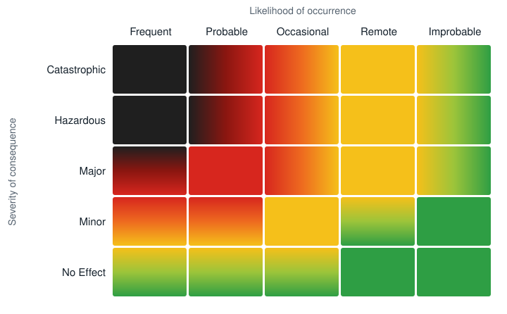
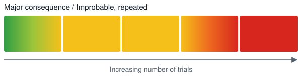

Three Random Thoughts On Safety: organizational safety culture, the 2D risk matrix and owning the risk
Key idea
Anyone on a team must be free to say stop. A low probability isn't a fixed risk: repeated over enough trials it grows, so a green box on the risk matrix can turn red. And to accept a risk, you have to own it: be ready to defend the loss as acceptable when it comes.
Draft: the key idea is Steve's summary of Mike's text, for Mike's approval.
We now come to the “technical” part of this evening’s event. I had three people in mind I thought I might ask to give a brief this evening in order to qualify this as a technical meeting within the requirements of our SETP section charter, but in the end I decided not to impose on anyone and instead give the brief myself. Hopefully this will be brief, I’m shooting for less than 20 minutes, and I don’t believe there are any equations involved, so not overly technical.
I’m going to talk about three things – organizational safety culture, the 2D Risk Matrix, and something I’ll call “Owning The Risk.”
Organizational safety culture #
The subject of safety culture in an organization has been a frequent topic of discussion in the flight test community. The central theme of the 2022 North American Flight Test Safety Workshop was the impact of organizational culture on flight test safety. In the February 2022 issue of Flight Test Safety Fact, Mark Jones made reference to a lack of consensus on the ideal structure of an organization’s safety culture. Art Tomassetti mentioned organizational safety culture in a recent episode of his “On Condition” podcast.
On the question of how best to structure an organization’s safety culture, my favorite comments come from remarks Gene Kranz made to his team at a meeting he called on the Monday morning after the Apollo One fire:
…we screwed up. It could have been in design, build, or test. Whatever it was, we should have caught it. We were too gung ho about the schedule and we locked out all of the problems we saw each day in our work. Every element of the program was in trouble and so were we. …Not one of us stood up and said, Dammit, stop!
What I hear Kranz saying here is that each individual has both the power and responsibility to stand up and say, “Dammit, stop!” So for me, the two most important features of a safety culture is that this be true – that every team member knows that he or she is both empowered, and responsible to flag safety issues, and that the culture be “vertically unconstrained” – such that a team member may escalate safety concerns without limit up the “chain of command” within the safety system.
There may be those who will argue that such a structure will lead to a problem of “safety paralysis,” because there will always be some perception of risk that no amount of attempted mitigation can eliminate. The idea of safety paralysis was specifically alluded to during discussions on the eve of the ill-fated Challenger launch when Marshall Space Flight’s Larry Mulloy, in response to Morton Thiokol’s recommendation for a minimum O ring temperature, exclaimed, My God, Thiokol, when do you want me to launch, next April?
I’ll have a suggestion later on for one way to approach this apparent conflict.
The 2D risk matrix #
Arranged from Mike's Word file: the first of its two versions of the matrix section is left out, as Mike asked on October 23. His corrected file is to come.
In the February 2022 issue of Flight Test Safety Fact, Rod Huete, in his Op/Ed: “The Subjective 2D Risk Matrix used in Flight Test,” observes, There appears to be a difference of opinion as to whether the probability of occurrence in the Risk Matrix should be based on subjective judgement (grey bearded approach) or based on a known database (e.g., contain numbers).
Rod then goes on to present two opposing views – one from Mark Jones and one from John Hed – in answer to the question.
In his 2018 paper, Risk Awareness: A New Framework for Risk Management in Flight Test, Doug Wickert defined a concept of “Risk Awareness” (as an analog to situational awareness) in a way that deliberately leaves out an assessment of the probability of occurrence. Doug writes:
To put it bluntly, most probability estimates in traditional risk determinations are worth little more than wild guesses. The probability of a simultaneous loss of engine thrust and asymmetric leading edge slats—the root cause of a 1979 DC-10 crash at Chicago O’Hare, still the deadliest single airline accident on US soil—had been estimated to be less than one in a billion by McDonnel Douglas engineers. And yet those exact failures occurred four times in four years before McDonnel Douglas introduced a fleet-wide fix for the DC-10 in 1982. Recognizing the possible consequences of uncertainty is far more important than providing a dubious assessment of probabilities of potential outcomes. All consequences of uncertainty should be considered regardless of their likelihood. The relevant question for safety boards should be “can it happen” instead of “how likely is it?” The crucial element of risk awareness is not the probability estimate of something going wrong but the awareness that there exist unknown outcomes that must be mitigated.
In what might be considered an alternative perspective, in the test program that was the subject of the paper Have You Ever Seen A Rhino Jump, by Michael Wallace and Jonathan Williams, the test team used a Hazard Risk Assessment to compute – based on current fleet experience – a 10−7 probability of a catastrophic engine failure during the fifteen second period between brake release and departure from the ski jump. In this example, the team had what was presumably a relatively robust database from which to compute the risk of a critical failure: the fleet experience.
It is, however, relatively easy to uncover examples of cases where data may have the ability to mislead. As an experiment, I flipped a coin 24 times. I got 12 heads and 12 tails – undoubtedly a lucky result that mimics the overall probability. But that wasn’t the interesting part of the experiment for me. If you watch basketball on television, you will inevitably hear an announcer describe a shooter as being “in the zone” when he makes, say, five consecutive shots, or, having “gone cold” when he misses five in a row. Presumably these are supposedly physical states the shooter enters, in which he either “can’t miss” or “can’t hit” the shot, for some mysterious, but real reason. The best NBA shooters approach 50% shooting percentage, on average, which is conveniently the probability in a coin flip, and they might typically take about 24 shots during a game. The interesting part of my coin flip experiment was that in only 24 total flips, I got one string of five heads in a row (in the zone), and another string of five tails in a row (gone cold). I draw two observations from this. One is that the very concept of a physical state where the shooter is “in the zone” or has “gone cold” is completely unnecessary to explain what we see in a basketball game. But beyond that, one is prompted to consider what we would likely see with a higher probability. If a shooter had a 99% chance of making each shot, we’d expect, on average, to see 99 makes before a miss. But we would likely also see cases of perhaps 500 consecutive makes, or 5 consecutive misses. This suggests that any data we rely on for predictive value, if we are looking at a subset of all possible data, may be predicting results which are considerably inaccurate or unreliable.
Returning to Doug Wickert’s paper, he makes the distinction between assessments made in the different domains of knowledge, and posits that different approaches are appropriate in the different domains. Where knowledge is high and uncertainty arises out of randomness, calculated, reliable decisions are possible. In the realm of pure uncertainty, where knowledge is low or non-existent, heuristics are more likely to produce the best results.
With respect to the 2D risk matrix, there are two things about it that have always bothered me. One is the question as to whether, if the consequence of a negative outcome is catastrophic, is there any probability low enough, except for zero, where the risk can be said to be tolerable? (Perhaps my problem here is that the relatively simple visual presentation of the risk matrix suggests a linear decrease in probability along that axis. If the axis were thought of as being logarithmic instead, then maybe I could be comfortable with arriving at “tolerable” within the realm of catastrophic outcomes.) Second, it seems to me that there should be a third dimension to risk assessment not captured by the 2D Matrix – the dimension of time – or more specifically, number of trials. A lower probability (that is non-zero) will evolve into a higher probability as the number of trials increases, thus increasing the risk. Thus a risk of significant negative outcome with very low probability may transition from acceptable to unacceptable.
In this first illustration I have depicted a typical representation of the 2 D Risk Matrix. I’ve replaced some of the solid blocks of color with shaded transitions, just to highlight the inherent uncertainties in assigning probabilities and consequences.

In the second illustration, I’ve selected one box of the matrix – Major Consequence / Improbable – and projected it through an increasing number of trials to illustrate how it may transition to an unacceptable risk.

In the case of the Rhino Jump, with respect to the possibility of a catastrophic engine failure during the critical 15 seconds, the probability of success – i.e. avoiding such a failure and the presumed consequent loss of the aircraft – for one trial was 0.999999 – or “six nines.” For eight trials, the number in the test program, it dropped only as far as .999992 – essentially five nines or the loss of one nine.
However, if the test program had, for some reason, required 1000 trials, or if perhaps it was proposed that the procedure should become part of fleet operations, where 1000 trials might be expected over the lifetime of the use of the procedure, a success expectancy of six nines would reduce to only three nines. And perhaps this might not be an acceptable level of risk. At the very least, it might move from the “green” shading into the yellow and might invoke a desire for some further mitigation.
For Mike: the Rhino Jump risk is given as 10−7 above, but as 0.999999 (“six nines”, a 10−6 risk) here. Which is right?
The same arithmetic as Factor I · Deceptive mathematics. Try 99.9999 percent, 8 times and 1,000 times, in the calculator.
Rod Huete, in his Op/Ed in February 2022 offers this: I personally think the labels of intolerable, tolerable, and acceptable by ICAO are not very practical because in a particular program, you may choose to accept what is tolerable or even intolerable in the ICAO definition.
Owning the risk #
This leads me to one further thought – the concept of “owning the risk.”
For any number of reasons, not all programs will arrive at the same assessment of what constitutes acceptable risk. But what does it truly mean to “accept” a risk? For me, to truly accept a risk it is necessary that one “owns” the risk. Perhaps the greatest failure to do so, in my mind, is represented by the Challenger accident. It is commonly reported (and not to my knowledge disputed), that NASA engineers had assessed that there was a 1% chance of a total loss of vehicle and crew during the shuttle missions. (Specifically, this was a 1% chance per mission, not for the program overall, as a number of references confirm.)
Upper management at NASA apparently rejected that probability assessment, and instead adopted one that was orders of magnitude lower (more favorable). The engineers turned out to be right, with impressive precision: out of 135 missions, there were 2 catastrophic failures.
One might ask, what could possibly have been NASA management’s justification for overriding the engineer’s assessment of risk? One articulated justification was that the engineer’s assessment did not take into account the fact that safety would improve as a result of everything NASA learned as the program progressed. But did this happen? What did NASA learn that improved safety going forward from the repeated failures of the O-ring seals that lead up to the Challenger accident? What did they learn from the repeated loss of heat shield tiles that lead up to Columbia? What did they learn from multiple cases of fires in pure oxygen environments that had preceded Apollo One? By the time they had learned anything that changed their policies and procedures, the catastrophic accident that such knowledge might have prevented had already happened.
It is one thing to say that the space program recognized and accepted that space flight was risky. The problem with that position is that the response to each of the three major NASA accidents was completely inconsistent with the idea that the risk was accepted. The reaction to each of the three accidents was that they were deemed to be catastrophic and unacceptable tragedies that could not be allowed to happen again.
One might conclude that NASA management’s rejection of the engineer’s assessment of risk was, in one sense, a conscious decision not to own the risk. What would it have meant for NASA management to own the risk? What does it mean in any context to own the risk? Well, if one’s most accurate numerical risk assessment says that you have a 1/100 failure probability rate, and you plan to launch more than 100 missions, then you have to expect to have at least one failure. You might not have that failure, but your expectation has to be that you will. Owning that risk means that you should, in a virtual sense, live through all of the logically anticipated consequences of that catastrophic failure: the notification of next of kin of the victims, the funerals, the accident investigation, the testimony before investigative bodies, the justification of the decisions you made as an individual, as a team, as an organization. Owning that risk means agreeing that this will be, when it happens, acceptable. You need to not only be willing to accept the loss, but willing to defend that loss as acceptable, to defend the idea that this is what we all agreed to. And when and if you find yourself unable, or unwilling to do so, then you need to go back and re-examine the chain of decisions that left you with a 1/100 chance of failure. The loss is either acceptable, as a trade-off for what will have been gained by the program, or it is not. If it is not, then the 1/100 number must be changed, or the number of missions severely curtailed.
Most discussions of risk focus on how to mitigate it, and most, at the same time, acknowledge that we will never eliminate it. A missing piece that may be capable of joining these two ideas is the concept of truly owning the risk, once you establish just what you believe it to be.
Cite this page
Meier, M. (2026, November 12). Three random thoughts on safety: Organizational safety culture, the 2D risk matrix and owning the risk. meiersafe.com. https://meiersafe.com/three-random-thoughts/
Three Random Thoughts On Safety by Mike Meier, meiersafe.com/three-random-thoughts/, CC BY-SA 4.0. The words quoted from Gene Kranz, Larry Mulloy, Rod Huete and Doug Wickert are theirs.